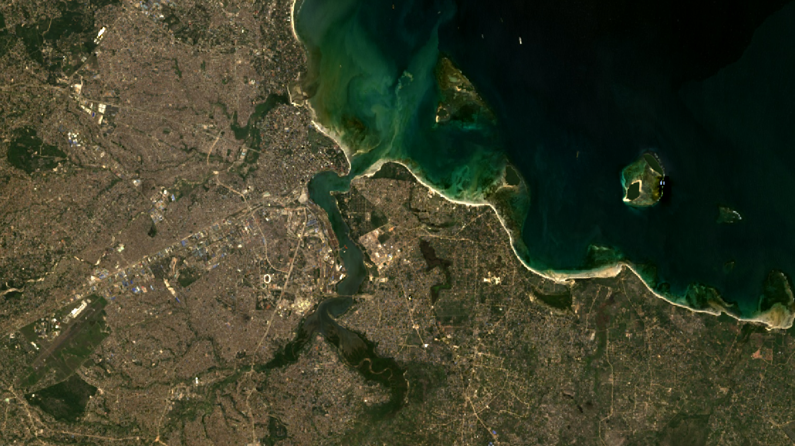

//--------------------------Vector data---------------------------
var dataset = ee.FeatureCollection("FAO/GAUL/2015/level2");
var dataset_style = dataset.style({
color: '1e90ff',
width: 2,
fillColor: '00000000', // with alpha set for partial transparency
// lineType: 'dotted',
// pointSize: 10,
// pointShape: 'circle'
});
Map.addLayer(dataset_style, null, 'Second Level Administrative Units');7 Classification II
In this practical we will look at some more advanced classification methods and how to do change detection…
7.1 Data
7.1.1 Vector data
Here i will load the level 2 Global Administrative Unit Layers (GAUL), but style it on the map
Note that the fill colour is set to 0, making it transparent. If i wanted to set this to a colour i could use any hex colour code and then adding a value (alpha) for transparency…e.g. e32636 and then e3263675 for 75% transparency. However this means that the attributes of the data are lost…so this might be more appropriate:
Map.addLayer(dataset, {}, 'Second Level Administrative Units_2');Next, i will filter my study area…
var Daressalaam = dataset.filter('ADM1_NAME == "Dar-es-salaam"');
Map.addLayer(Daressalaam, {}, 'Dar-es-salaam');7.1.2 EO data
This week i am going to switch back to Landsat…we need to…
- set the scale function
- load the imagery
- filer based on dates
- filter based on the study area
- filter on cloud coverage
- apply the scale function
- extract the median
- map the output
//--------------------------Landsat data---------------------------
function applyScaleFactors(image) {
var opticalBands = image.select('SR_B.').multiply(0.0000275).add(-0.2);
var thermalBands = image.select('ST_B.*').multiply(0.00341802).add(149.0);
return image.addBands(opticalBands, null, true)
.addBands(thermalBands, null, true);
}
var oneimage_study_area_cloud = ee.ImageCollection('LANDSAT/LC08/C02/T1_L2')
.filterDate('2022-01-01', '2022-10-10')
.filterBounds(Daressalaam) // Intersecting ROI
.filter(ee.Filter.lt("CLOUD_COVER", 1))
.map(applyScaleFactors)
.reduce(ee.Reducer.median());
// set up some of the visualisation paramters
var vis_params = {
bands: ['SR_B4_median', 'SR_B3_median', 'SR_B2_median'],
min: 0.0,
max: 0.3,
};
Map.addLayer(oneimage_study_area_cloud, vis_params, 'True Color (432)');Now in Landsat, just like Sentinel we also have a quality assessment band that we can use to mask out pixels such as clouds or cloud shadows…to use this we can make another function and then call it within the image loading code, just like the scaling above….
The function takes the values from the QA band — see QA Pixel in the GEE catalog and makes a mask. This code originated from stack exchange with confirmation coming from Niek Gorelick, one of the GEE founders.
var cloudMaskC2L7 = function(image) {
var dilatedCloud = (1 << 1)
var cloud = (1 << 3)
var cloudShadow = (1 << 4)
var qa = image.select('QA_PIXEL');
var mask = qa.bitwiseAnd(dilatedCloud)
.and(qa.bitwiseAnd(cloud))
.or(qa.bitwiseAnd(cloudShadow))
return image.updateMask(mask.not());
}To add this into the code that loads the image collection….
var oneimage_study_area_cloud = ee.ImageCollection('LANDSAT/LC08/C02/T1_L2')
.filterDate('2022-01-01', '2022-10-10')
.filterBounds(Daressalaam) // Intersecting ROI
.filter(ee.Filter.lt("CLOUD_COVER", 1))
.map(cloudMaskC2L7) /// this is the new function
.map(applyScaleFactors)
.reduce(ee.Reducer.median());Now when i look at my image i can see the masked areas…

However, are these areas actually clouds? No, it’s sand or suspended sediment….

To use the QA band or not, generally with SR data i don’t. Before we finish loading our data I am going to select the bands I want and clip the image to the study area…all in one nice chunk of code..
var oneimage_study_area_cloud = ee.ImageCollection('LANDSAT/LC08/C02/T1_L2')
.filterDate('2022-01-01', '2022-10-10')
.filterBounds(Daressalaam) // Intersecting ROI
.filter(ee.Filter.lt("CLOUD_COVER", 1))
//.map(cloudMaskC2L7)
.map(applyScaleFactors)
.reduce(ee.Reducer.median())
.select(['SR_B1_median', 'SR_B2_median', 'SR_B3_median', 'SR_B4_median', 'SR_B5_median', 'SR_B6_median', 'SR_B7_median'])
.clip(Daressalaam);
Map.centerObject(Daressalaam, 10)
Now let’s classify…
7.2 Classify
7.2.1 Sub-pixel
Spectral unfixing is where we provide an end member and compute the fractions of each pixel from the often “spectrally pure” spectral signature. However, no pixel is ever (or rarely) on landcover type. There are two main ways to do this in GEE.
- Define a variable that is the end member (this could be a point)
- Select some training data of landcover and then take a average that becomes the endmember
Once we have the data we then pass this to the unmix() function that will generate and image.
In the first example, this could involve querying the image to generate a list of values…such as that from the manual
var urban = [88, 42, 48, 38, 86, 115, 59]
var veg = [50, 21, 20, 35, 50, 110, 23];
var water = [51, 20, 14, 9, 7, 116, 4];However, we can also use the image itself to generate these lists in way 2.
In this case i have created a point (or it could be a polygon) and extracted the (mean) value….
//------------------urban-------------------
var urban_val = oneimage_study_area_cloud.reduceRegion({reducer:
ee.Reducer.mean(),
geometry:urban,
scale: 30,
maxPixels: 1e8});
var urban_val2 = urban_val.values()Once we have got this working for one example, we can make it into a function…
//------------------function-------------------
function data_extract (image, vector) {
var data = image.reduceRegion({reducer:
ee.Reducer.mean(),
geometry:vector,
scale: 30,
maxPixels: 1e8});
return data.values(); // here we use return
}Then we can call it with the different landcover types we have…
var urban_data = data_extract(oneimage_study_area_cloud, urban);
var grass_data = data_extract(oneimage_study_area_cloud, grass);
var bare_earth_data = data_extract(oneimage_study_area_cloud, bare_earth);
var forest_data = data_extract(oneimage_study_area_cloud, forest);Unmix the image and add it to the map…recall what this is from the lecture
//------------------fractions-------------------
var fractions = oneimage_study_area_cloud.unmix([urban_data, grass_data, bare_earth_data, forest_data]);
Map.addLayer(fractions, {}, 'unmixed');Now at the moment these are unconstrained, meaning they don’t sum to one and we have negative values…to change this add the following from the documentation.
var fractions_constrained = oneimage_study_area_cloud.unmix([urban_data, grass_data, bare_earth_data, forest_data], true, true);
Map.addLayer(fractions_constrained, {}, 'constrained fractions');Now we have the fraction (or percent) of each endmember per pixel. But how is this helpful and What can we do with this ?
Credit the Earth Engine Intermediate Curriculum for some code here.
7.2.1.1 Accuracy
A problem with using sub pixel analysis is that it is harder to calculate an error matrix. There are two main ways to deal with this.
- Harden the sub-pixel image and classify each pixel that has the largest proportion of land cover (e.g. 50% of more)
- Take a very high resolution image > overlay the Landsat pixel (through a fishnet grid) > select a pixel > digitised the high resolution data within the pixel > compare them. This is a lot more involved, but possible with Google Earth (the desktop app that has high resoltion imagery)
We will focus on way 1.
Now, an approach to do this is use a mask (or filter). For example, when a pixel is greater than 0.5 then assign it a value of x, which will be the land cover…in the below code, urban is 1 and so on.
var reclassified_urban = fractions_constrained.expression('b(0) >.5 ? 1 : 0');
var reclassified_grass = fractions_constrained.expression('b(1) >.5 ? 2 : 0');
var reclassified_bare_earth = fractions_constrained.expression('b(2) >.5 ? 2 : 0');
var reclassified_forest = fractions_constrained.expression('b(3) >.5 ? 3 : 0');Here, the band is represented by b(0) then we are querying it to find the pixels greater than .5, if that is true for the pixel (denoted by the ?) then assign a value of 1, if false (denoted by the : then assign a value of 0). We could also add another condition for example, greater than .5 but less than .9…
We then need to add all these images together, note they are just plain images not a collection….
var reclassified_all = reclassified_urban.add(reclassified_grass)
.add(reclassified_bare_earth)
.add(reclassified_forest)
// the output is made at a larger extent so clip
.clip(Daressalaam);And map the output…
Map.addLayer(reclassified_all, {min: 1, max: 3, palette: ['d99282', 'dfdfc2', 'b3ac9f', '1c5f2c']}, "reclassified_all");How could we run some accuracy assessment from this point, note it would be easier if we collected lots of training data at the start and held a % back before making an average endmember.
7.2.2 Object based
7.2.3 Image
Otherwise know as object based image analysis (OBIA) as opposed to pixel analysis, pixels are grouped together based on a set of rules…
The first port of call here is image gradient, this is the directional change in intensity or colour in an image. To do this…
var gradient = oneimage_study_area_cloud.gradient();The output gives us an x and y image for horizontal and vertical changes but this isn’t that useful…
We could change this to spectral gradient this is a per-pixel difference between erosion and dilation. Erosion is the pixel closet to the spectra and the dilation is the furthest.
var spectralgradient = oneimage_study_area_cloud.spectralGradient();
Map.addLayer(spectralgradient,{}, "spectral_gradient");Within this function we can also set the metric for the spectral gradient (e.g. spectral angle mapper is ‘sam’) and the kernel size, the default is a square radius of 1.
To make either of these into objects we’d need to vectorise the raster data - which might not be that useful, if you have high resolution data it will work better…
7.2.4 Super pixels
The basic idea here is the same as the lecture, take a grid of points and get the pixels around them. We want to reduce the pixels to fewer objects…all pixels must go somewhere and then we can classify the objects….
To start with, let’s try k-means clustering of pixels….
var kmeans = ee.Algorithms.Image.Segmentation.KMeans({
image: oneimage_study_area_cloud,
numClusters: 1000,
numIterations: 100,
// neighborhoodSize: 2,
//gridSize: 2,
forceConvergence: false,
uniqueLabels: true
})
Map.addLayer(kmeans, {}, 'kmeans')This will produce a large grid of pixels (squares basically) of similar kinds of pixels, we could then take the average spectral reflectance and classify them. Note that the output is just a 1 band image with a cluster ID…
Another approach we can try is Simple non-iterative clustering (SNIC), this makes clusters without k-means. It uses a regular grid of points (like k-means) but then assigns pixels to points through distance color and co-ordinates - it represents normalised spatial and color distances.
Let’s make a seed gird….the number denotes the spacing in pixels (i assume this is GEE pixels not our Landsat pixels), we can also set a square or hex grid
var seeds = ee.Algorithms.Image.Segmentation.seedGrid(40, "hex");
Map.addLayer(seeds, {}, 'seeds')To create the objects it’s then…
// Run SNIC on the regular square grid.
var snic = ee.Algorithms.Image.Segmentation.SNIC({
image: oneimage_study_area_cloud,
//size: 50, // don't need it seeds given
compactness: 1,
connectivity: 8,
neighborhoodSize:50,
seeds: seeds
});
Map.addLayer(snic, {}, 'means', true ,0.6)Here we have:
- image = our image
- size = seed locations, not needed as we have a seed layer
- compactness = represents how compact the super pixels are. A higher value means compact superpixels which results in regular hexes or squares as opposed to different shapes and sizes….
- connectivity = distances (as above) to either 4 or 8 connected pixels to current cluster.generally the higher the value the smoother the objects will appear
- neighborhoodSize = I believe this sets a limit for the clusters and defaults to 2 * the seed size, if you comment it out (or set it to 1) you will see large squares around some of the clusters. Probably not overly useful here, so i will set this quite high.
- seeds = our seed layer
Printing the snic variable we can see the mean values across each object and the cluster (or pixel) ID
print(snic, "snic")Once we have the clusters we can extract some more info that might be useful to us…such as…would the area / perimeter / standard deviation of the objects be similar across the image and can we use that as a band in classification? Or perhaps NDVI per object that we could use to threshold out green objects such as parks and forests…
Here is the standard deviation for each band within the object. We must append the cluster ID back to the original image data then reduce the image based on the clusters and finally calculate the standard deviation. The final value here is the maxSize that is the size of the neigbhourhood for aggregating the values - any object larger than this will be masked - we should set it to the same as our neighborhoodSize
//------------------OBIA stats-------------------
var clusters = snic.select('clusters')
var stdDev = oneimage_study_area_cloud.addBands(clusters).reduceConnectedComponents(ee.Reducer.stdDev(), 'clusters', 100)
Map.addLayer(stdDev, {min:0, max:0.1}, 'StdDev', true)For NDVI of each object we can just use the mean SR per object…
var NDVI = snic.normalizedDifference(['SR_B5_median_mean', 'SR_B4_median_mean']);
Map.addLayer(NDVI, {min:-1, max:1}, 'NDVI', false)Or we could add NDVI as a band to the original image and then compute the standard deviation. This is useful as it shows the dispersion of values across each object….e.g. a park might have a low standard deviation in the object, but an urban area might have a higher standard deviation….
Once we have what we want, create an image….
//------------------OBIA merge-------------------
var bands = ['SR_B1_median_mean', 'SR_B2_median_mean', 'SR_B3_median_mean', 'SR_B4_median_mean',
'SR_B5_median_mean', 'SR_B6_median_mean', 'SR_B7_median_mean']
var objectPropertiesImage = ee.Image.cat([
snic.select(bands),
stdDev,
NDVI
]).float();Train and classify….we need to get some training data….so select some points or reuse / add to your points from the mixture classification. Note, that if you only have 1 point per landcover class the classification will be very poor! Note, that some publications / workflows actually use classified data products (e.g. Dynamic World) to produce the training and test data.
Note this code is adapted from the first classification we did last week, you might consider adding in the Train test split code as well to assess the accuracy of the image….
//------------------ Classification -------------------
// Make a FeatureCollection from the polygons
var points = ee.FeatureCollection([
ee.Feature(urban, {'class': 1}),
ee.Feature(grass, {'class': 2}),
ee.Feature(bare_earth, {'class': 5}),
ee.Feature(forest, {'class': 6}),
]);
// The name of the property on the points storing the class label.
var classProperty = 'class';
// Sample the composite to generate training data. Note that the
// class label is stored in the 'landcover' property.
var training = objectPropertiesImage.sampleRegions({
collection: points,
properties: [classProperty],
scale: 30
});
// Train a CART classifier.
var classifier = ee.Classifier.smileCart().train({
features: training,
classProperty: classProperty,
});
var classified = objectPropertiesImage.classify(classifier);
Map.addLayer(classified, {min: 1, max: 5, palette: ['d99282', 'dfdfc2', 'b3ac9f', '1c5f2c']}, "classified");7.2.5 Resources
Image Segmentation and OBIA by Noel Gorelick: